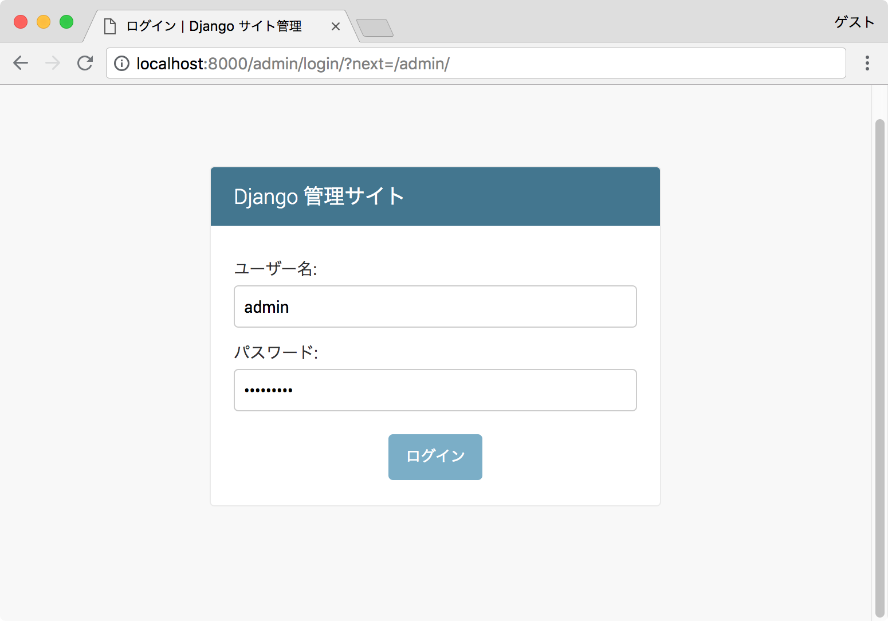
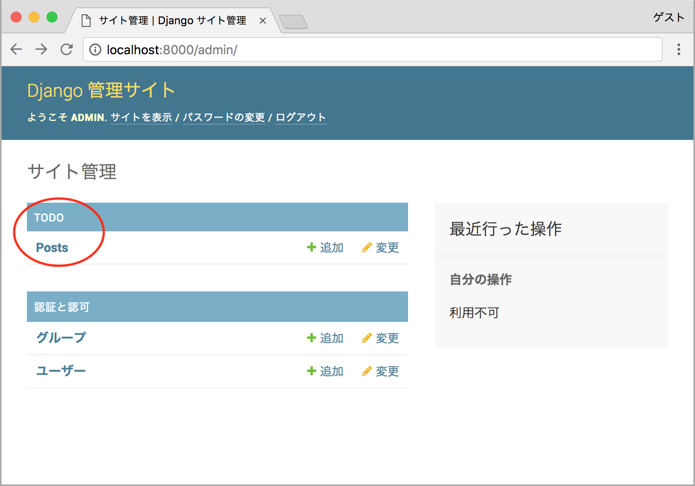

9. DjangoでDB管理
データベースの作成
Djangoは、デフォルトでSQLiteが設定されているので、特に設定することなく利用できます。 今回は、このままDBのテーブルを作成しましょう。
Djangoでは、モデルを作成すると→マイグレーションファイルが作成され→テーブルを追加してくれます。
まずは、todo/models.pyに、以下プログラムを追加します。
1 2 3 4 5 6 7 8 9 10 11 12 | # todo/models.py from django.db import models class Post(models.Model): task = models.CharField(max_length=100) completed = models.BooleanField(default=False) created_at = models.DateTimeField(auto_now_add=True) updated_at = models.DateTimeField(auto_now=True) def __str__(self): return self.task |
Note
マイグレーションファイルを作成すると、
PostがDBのテーブル名になります。
task、completed...などがDBのカラム名になります。
CharField、BooleanField...などはデータ型です。
ただし、データ型はDBに依存するので、sqlite3の場合は以下のデータ型になります。
task … text型
completed … integer型
created_at … text型
updated_at … text型
(sqlite3には、booleanやdatetime型がないため)
次は、settings.pyにtodoが含まれていることを確認します。
1 2 3 4 | # simpletodo/settings.py INSTALLED_APPS = [ 'todo.apps.TodoConfig', 'django.contrib.admin', |
Djangoが起動している場合は、停止します。
その後、Terminalで以下コマンドを実行してください。
1 2 | python manage.py makemigrations python manage.py migrate |
Note
上記はマイグレーションのコマンドです。
makemigrationsで、モデルからマイグレーションファイルが作成されます。(todo/migrasions/0001_inital.py)
migrateで、マイグレーションファイルからdb.sqlite3にテーブルが作成されます。
Djangoの管理画面
作成したDB情報を見てみましょう。
Djangoでは、標準で管理画面があるので、中身を簡単に確認することができます。
まず、管理画面に見たいモデルを追加します。
1 2 3 4 5 6 | # todo/admin.py from django.contrib import admin from todo.models import Post admin.site.register(Post) |
管理ユーザを作成します。 Terminalで、以下のコマンドを実行してください。
1 | python manage.py createsuperuser |
ユーザ名などは、好きに入力してください。
今回は、以下のように入力しました。
1 2 3 4 | Username: admin Email address: admin@example.com Password: ******** Password (again) ******** |
管理ユーザの作成が終わったら、Djangoサーバを起動して
http://localohost:8000/admin/へアクセスします。

ログインして、TODOにPostsが表示されていたら完了です。

次は、Djangoで開発を行います。